1. เริ่มตั้งชื่อโฮสต์
และกำหนด ip address ให้กับเราเตอร์โดยพิมพ์ตามนี้
สำหรับ RouterA :
Router1#config t
Router1(config)#hostname RouterA
RouterA(config)#int e0
RouterA(config-if)#ip address 161.246.1.1 255.255.255.0
RouterA(config-if)#no shut
RouterA(config-if)#int s0
RouterA(config-if)#ip address 161.246.3.1 255.255.255.0
RouterA(config-if)#no shut
RouterA(config-if)#int to0
RouterA(config-if)#ip address 161.246.2.1 255.255.255.0
RouterA(config-if)#ring-speed 16
RouterA(config-if)#no shut
สำหรับ RouterA :
Router1#config t
Router1(config)#hostname RouterA
RouterA(config)#int e0
RouterA(config-if)#ip address 161.246.1.1 255.255.255.0
RouterA(config-if)#no shut
RouterA(config-if)#int s0
RouterA(config-if)#ip address 161.246.3.1 255.255.255.0
RouterA(config-if)#no shut
RouterA(config-if)#int to0
RouterA(config-if)#ip address 161.246.2.1 255.255.255.0
RouterA(config-if)#ring-speed 16
RouterA(config-if)#no shut
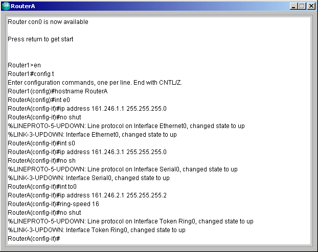
Router2#config t
Router2(config)#hostname RouterB
RouterB(config)#int s0
RouterB(config-if)#ip address 161.246.3.2 255.255.255.0
RouterB(config-if)#no shut
RouterB(config-if)#int s1
RouterB(config-if)#ip address 161.246.5.1 255.255.255.0
RouterB(config-if)#no shut
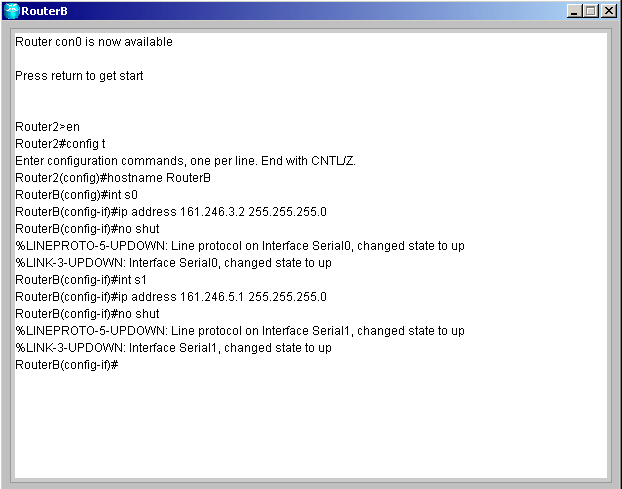
Router3#config t
Router3(config)#hostname RouterC
RouterC(config)#int e0
RouterC(config-if)#ip address 161.246.7.1 255.255.255.0
RouterC(config-if)#no shut
RouterC(config-if)#int s0
RouterC(config-if)#ip address 161.246.5.2 255.255.255.0
RouterC(config-if)#no shut
RouterC(config-if)#int to0
RouterC(config-if)#ip address 161.246.6.1 255.255.255.0
RouterC(config-if)#ring-speed 16
RouterC(config-if)#no shut
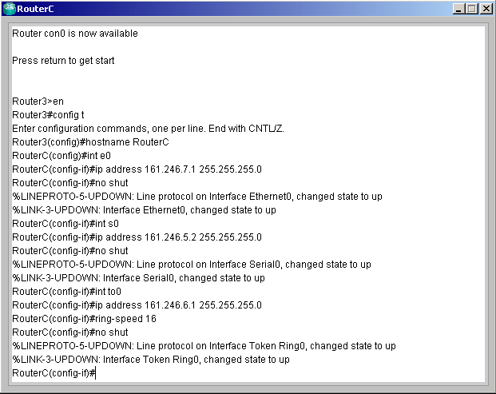
RouterA
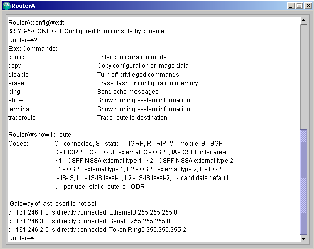
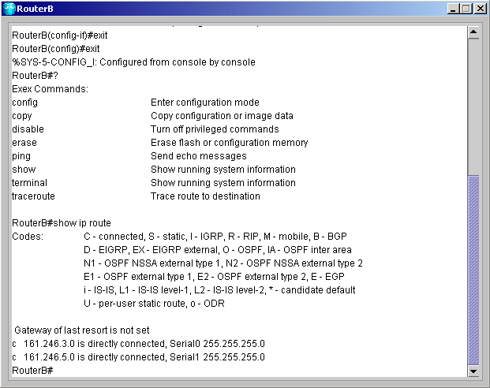
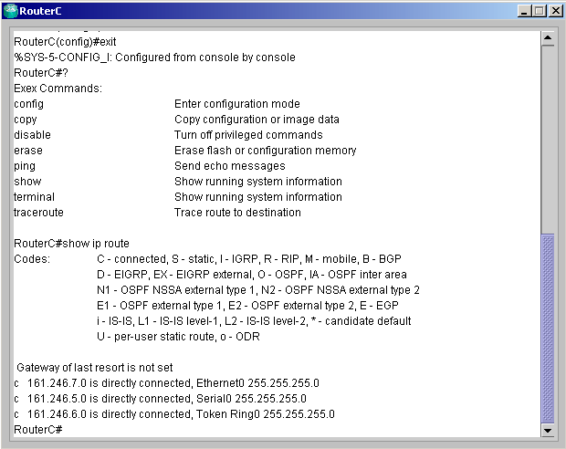
RouterA#ping 161.246.7.1
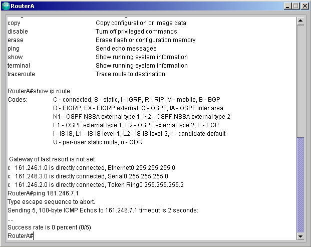
RouterA#config t
RouterA(config)#ip route 161.246.5.0 255.255.255.0 161.246.3.2
RouterA(config)#ip route 161.246.6.0 255.255.255.0 161.246.3.2
RouterA(config)#ip route 161.246.7.0 255.255.255.0 161.246.3.2
ทำการ save configure โดยการพิมพ์ copy run start แล้วกด Enter
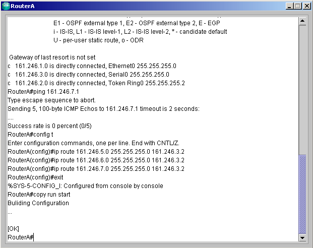
RouterB(config)#ip route 161.246.1.0 255.255.255.0 161.246.3.1
RouterB(config)#ip route 161.246.2.0 255.255.255.0 161.246.3.1
RouterB(config)#ip route 161.246.7.0 255.255.255.0 161.246.5.2
RouterB(config)#ip route 161.246.6.0 255.255.255.0 161.246.5.2
ทำการ save configure โดยการพิมพ์ copy run start แล้วกด Enter
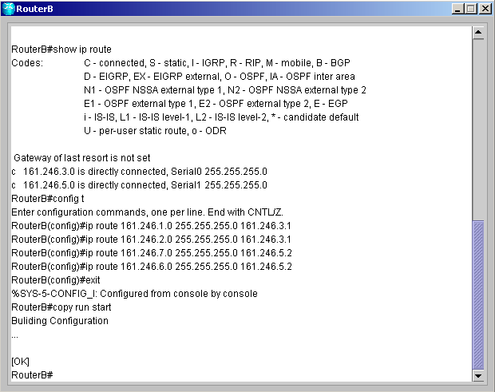
RouterC(config)#ip route 161.246.1.0 255.255.255.0 161.246.5.1
RouterC(config)#ip route 161.246.2.0 255.255.255.0 161.246.5.1
RouterC(config)#ip route 161.246.3.0 255.255.255.0 161.246.5.1
ทำการ save configure โดยการพิมพ์ copy run start แล้วกด Enter
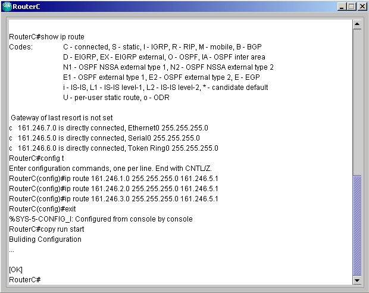
RouterA#show ip route
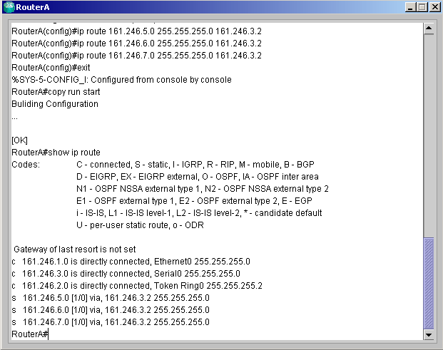
RouterA#ping 161.246.7.1
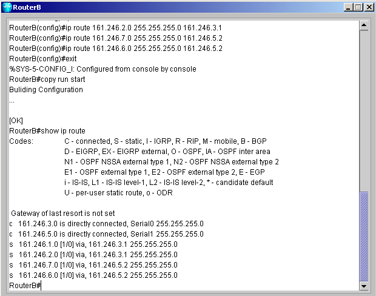
สำหรับโหมดการทำงานทั้งหมดของเราเตอร์สามารถดูได้ที่
Command